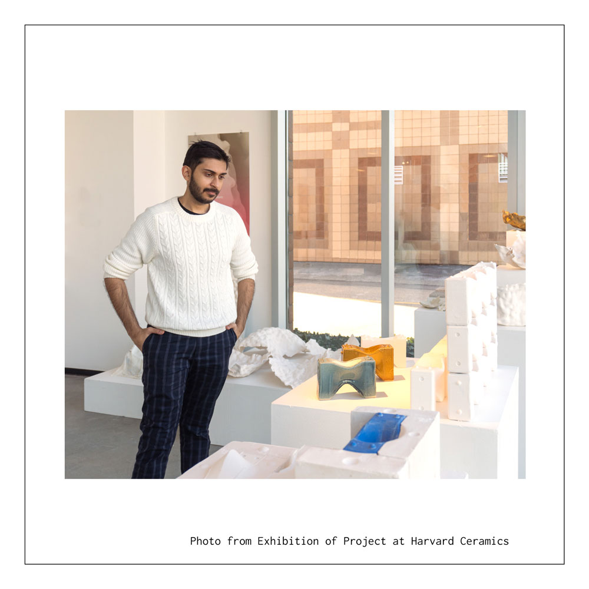
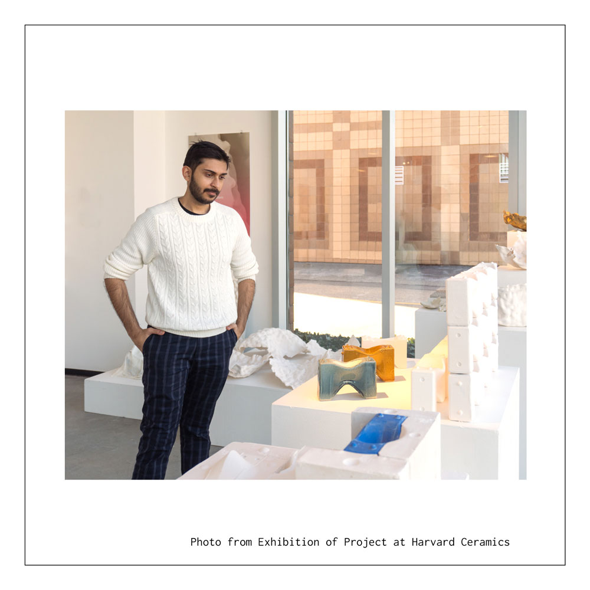

Cooling Brick
Fall 2022 | Professor Nathan King | Created in partnership with Ashutosh Lohana, Haoheng Tang, & Yuto Takenaka
Due to current publishing pursuits, this project is omitted from my website. Stay tuned to see my explorations into slip casting and 3d printing techniques in order to create a modular evaporative cooling system.


Concept
Cooling Brick was conceived of as a modular passive cooling system, harnessing accessible resources of wind and water, and the natural properties of ceramic to absorb rainwater and create channels to cool air penetrating the facade. The project was primarily produced using slip-casting techniques due to time and accessibility considerations for the modular system, however, the project did include 3D printed ceramics component, allowing the exploration of infill strategies to enhance potential structural integrity while maintaining porosity for water absorption, using the organically inspired form of gyroids.


 

Slipcast Investigations
Creation of the physical forms allowed the tangible properties of assembly, material qualities, finishes, and function to be explored. In tests using these ceramic bricks, we found with water of 62 degrees (on the higher end of natural rainfall temperatures) the cooling brick was able to lower the temperature of the surrounding air by 5 degrees in a matter of 30 minutes. Glazing allowed both for structural integrity and consideration for decorative uses. The system was displayed in full process and assembly at Harvard Ceramics.